SnapSplit 0.1.6：Blender 切件加入燕尾／卡扣、自訂接頭與 Live Preview
更新強化 3D 列印切件與組裝，適合大型角色、公仔或場景件的拆分。

外掛 ★★★★☆
完整分析
技術／流程變更
0.1.6 從單純切件推進到可裝配：新增燕尾與卡扣 connector、自訂接頭幾何與位置，Live Preview 可即時看尺寸結果。
Production 影響
對角色列印可減少切件後另建榫頭的手工時間，也較容易依列印方向、受力與可見面調整 connector。
導入測試與限制
需實測壁厚、樹脂／FDM 公差、接頭方向與高曲率表面；自動切件成功不等於實體裝配可靠。
BRIEF｜來源已驗證；證據深度較有限，完整分析會明確區分已知資訊與待驗證事項。